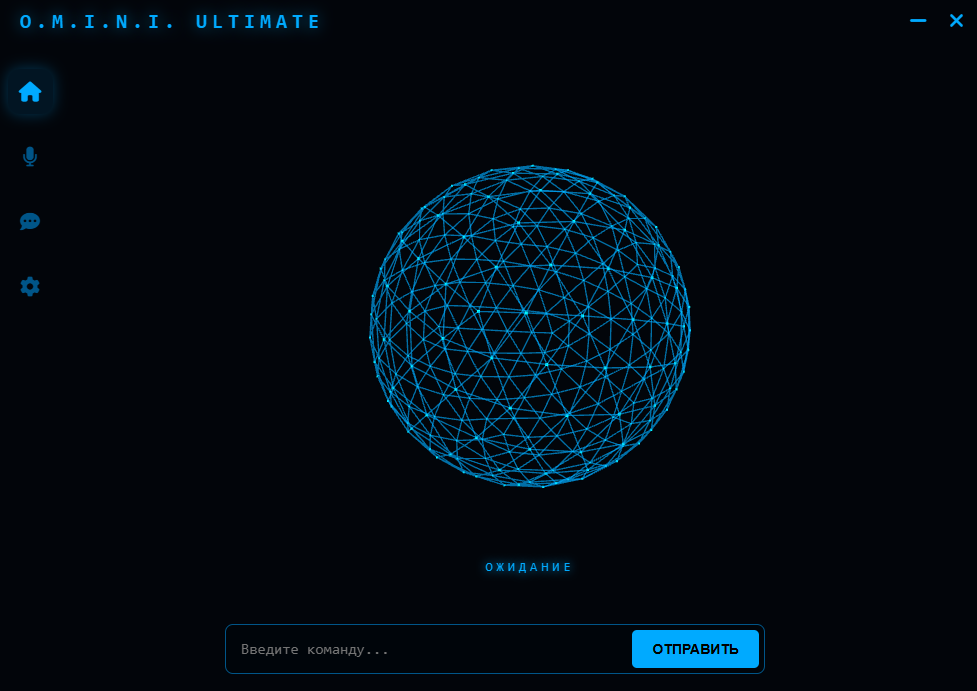

Управляй ПК голосом, узнавай погоду, общайся с нейросетью и чувствуй себя как Тони Старк.
Скачать OminiСкажи «Открой Steam» или «Погода» — и он сделает это.
Подключи свой ключ GigaChat или OpenAI в настройках.
Ключ хранится только на твоем ПК.

Версия v2.0 (Ultimate)
Скачать для Windows (.exe)